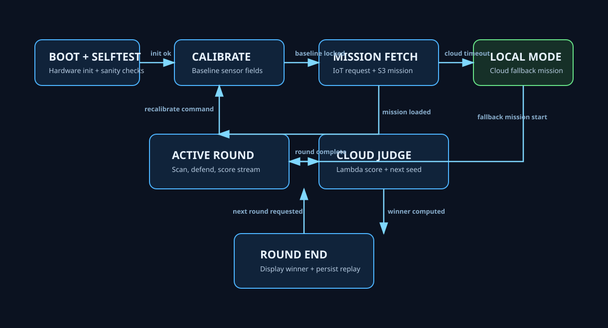
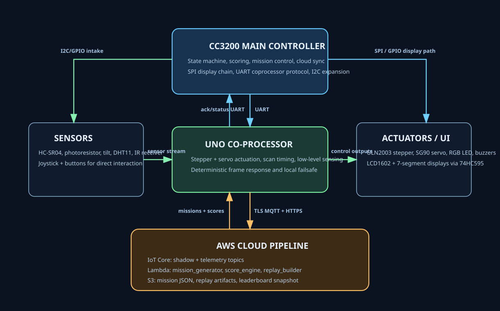

BOOT + SELFTEST
Initialize displays, actuators, and communication channels; verify sensor sanity.
EEC172 Final Project Proposal
A standalone embedded game system where one player defends sectors and one player applies pressure through cloud-driven threat waves. The platform combines deterministic real-time control with AWS mission generation, scoring, and replay artifacts.
AEGIS-172 is an interactive tabletop defense arena. The device scans the environment with a stepper-driven ultrasonic radar and identifies threat sectors using fused signals from ultrasonic distance, ambient light change, tilt events, and thermal context. The defender controls a servo shield and tactical actions through a joystick and IR remote while a second player influences round pressure through mode selection and timing strategy.
Each match is cloud-adaptive. The device requests a mission profile from AWS IoT, Lambda generates wave scripts, and S3 stores mission files and replay artifacts. At run completion, Lambda computes score and writes leaderboard data, allowing reproducible verification of round behavior and objective grading evidence.
The match engine is organized as a strict state machine with cloud participation in the critical path and local fallback mission logic for resilience.

Initialize displays, actuators, and communication channels; verify sensor sanity.
Capture baseline noise floors for ultrasonic, light, and tilt; lock baseline hash.
Request mission from AWS IoT; consume Lambda-generated mission file from S3.
Threat scan, defender actions, scoring stream, and on-device visual/audio feedback.
Lambda computes score adjustments, winner, and next-round wave seed.
If cloud unavailable, run deterministic local mission profile and queue telemetry.
Show final score on LCD/7-segment and publish signed run summary.
Persist replay artifact to S3 for demonstration proof and reproducibility.

$S,<sector>,<distance_cm>,<lux>,<tilt>,<temp_c>,<hum_pct>\n$C,<stepper_deg>,<servo_deg>,<buzzer_mode>,<rgb_state>\nShadow stores mission state, round status, and current score. Topic streams carry time-series telemetry for live cloud judging.
Lambda functions generate mission scripts, compute weighted scoring, and build replay manifests.
S3 stores versioned mission JSON, replay artifacts, and leaderboard snapshots used by the project webpage and final report evidence.
| Item | Qty | Source | Cost |
|---|---|---|---|
| CC3200 LaunchPad | 1 | Course lab kit | $0 |
| Arduino UNO R3 | 1 | Elegoo kit | $0 |
| Arduino UNO R3 (dev/prototype) | 1 | Elegoo kit | $0 |
| LCD1602 module | 1 | Elegoo kit | $0 |
| Prototype expansion module | 1 | Elegoo kit | $0 |
| ULN2003 stepper driver + stepper motor | 1 | Elegoo kit | $0 |
| SG90 servo motor | 1 | Elegoo kit | $0 |
| IR receiver + remote | 1 | Elegoo kit | $0 |
| Joystick module | 1 | Elegoo kit | $0 |
| DHT11 module | 1 | Elegoo kit | $0 |
| HC-SR04 ultrasonic sensor | 1 | Elegoo kit | $0 |
| 4-digit 7-segment display | 1 | Elegoo kit | $0 |
| 1-digit 7-segment display | 1 | Elegoo kit | $0 |
| 74HC595 shift register | 1 | Elegoo kit | $0 |
| RGB LED + resistors | 1 set | Elegoo kit | $0 |
| Active buzzer + passive buzzer | 1 each | Elegoo kit | $0 |
| Tilt ball switch + photoresistor | 1 each | Elegoo kit | $0 |
| Breadboard + jumper wires + diode/resistor set | 1 set | Elegoo kit | $0 |
| Total Additional Cost | $0 |
Finalize architecture, frame protocol, and local dual-UNO prototype loop.
Implement full state machine, sensor fusion logic, and deterministic scoring pipeline.
Integrate AWS IoT + Lambda + S3 mission flow and replay artifact persistence.
Swap in CC3200 as core controller, preserve UNO as real-time coprocessor.
Polish enclosure/wiring, rehearse 4-minute demo, and capture final video evidence.
| Area | Lead |
|---|---|
| State machine and scoring engine | Aktan |
| Real-time actuator/sensor firmware on UNO | Gezheng |
| AWS IoT + Lambda + S3 integration | Aktan |
| System integration and hardware reliability | Both |
| Demo choreography and presentation | Both |